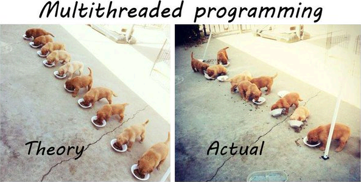
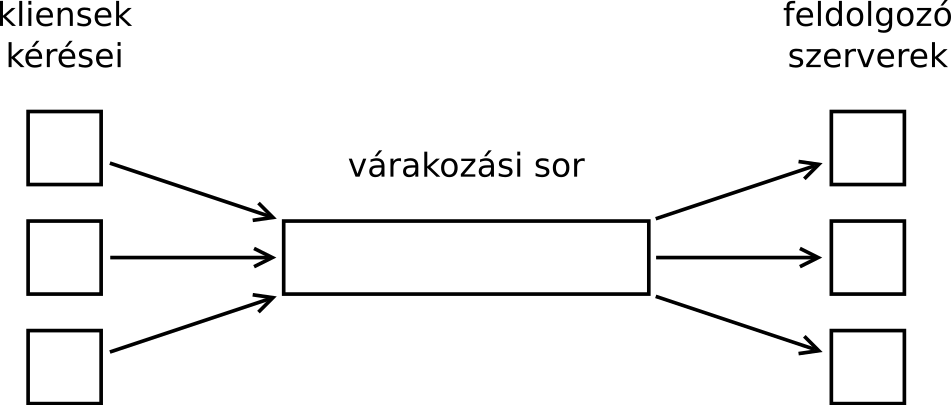

A programjainknak gyakran egyszerre több dolgot kell csinálnia. Például egy valós időben futó játékprogram egyszerre kell kezelje a szimulációt (pályán lévő játékosok mozgása), a megjelenítést és a hangokat. Ezt a programban egy helyen vezérelni nagyon nehéz feladat: nem elég arra figyelni, hogy mikor melyikkel kell foglalkoznunk, hanem még arra is figyelni kell, nehogy valamelyik művelet elhúzódjon. Ha túl lassú a játékosok mozgásának szimulációja, vagy túl lassú a megjelenítés, akkor kifutunk az időből, és a hangkártya nem kap bemenetet – aminek a hang szaggatása lesz az eredménye.
Külön-külön, nem összefésülve azonban egyszerű megírni az egyes részeket. A többszálúság azt jelenti, hogy az operációs rendszer képes arra, hogy a programunk különálló részeit egymástól függetlenül, egymás mellett futtassa. Így nekünk nem kell törődnünk az ütemezéssel. A párhuzamos futtatás történhet időosztásban (minden szál minden körben kap néhány milliszekundum időt), vagy a mai, modern számítógépeken akár ténylegesen párhuzamosan (több processzormagon).
A C++11-be beépítették a szálak létrehozásának lehetőségét. Új szálat az std::thread osztály konstruktora
indít (#include <thread>). Ennek első paramétere az a függvény kell legyen, amely külön szálon fog futni,
további paraméterei pedig a függvény paraméterei. A konstruktor azonnal visszaadja a vezérlést, és a fő szál
futhat tovább, tehát az alábbi kódban a ...-tal jelzett helyen bármilyen műveletet végezhetnénk, miközben a kiírások történnek.
Végül a .join() tagfüggvénnyel be kell várnunk az indított szálat, tehát meg kell várnunk, amíg befejeződik:
#include <iostream>
#include <thread>
void szal(int i) {
for (int j = 0; j < 1000; ++j)
std::cout << i;
}
int main() {
std::thread t1{szal, 1}; /* szal(1); */
std::thread t2{szal, 2}; /* szal(2); */
/* ... */
t1.join();
t2.join();
}1111111111111111111111111111111111111111111111111111111111111111111111121222222212121 2121212121222222221212121111111121212222222212222222212121111111121212121212121212121 2122222222121211111111211111111212121212121212121212121212222222212121212121212121212 1222222221212121212121212121212121212121212121212121212121212121211111111212222222212
A fordításkor a programhoz kell linkelni a környezet saját szálkönyvtárát; Linuxon pl. a g++
-pthread kapcsolót kell használni.
A szálak ütemezéséről nem tudunk semmit, csak annyit, hogy nagyjából egyszerre futónak érzékeljük őket. Ez azonban néha problémát jelent. Az alábbi kódban elindítunk 20 szálat, amelyek mindegyike a saját sorszámának megfelelő sort írja ki:
#include <iostream>
#include <thread>
#include <vector>
void szal(int i) {
std::cout << "Hello a szalbol: " << i << std::endl;
}
int main() {
std::vector<std::thread> szalak;
for (int i = 1; i <= 20; ++i)
szalak.push_back(std::thread{szal, i}); // szal(i)
for (auto & szal : szalak)
szal.join();
}A baj az, hogy a kimenet néha szétesik. Ezt az okozza, hogy néha a szálváltás a kiírás közben történik meg (a sztring után, de még a szám előtt, vagy a szám után, de még az újsor előtt):
Hello a szalbol: Hello a szalbol: Hello a szalbol: Hello a szalbol: 47 Hello a szalbol: 5 2 Hello a szalbol: Hello a szalbol: 6 Hello a szalbol: 8 3 1 Hello a szalbol: 9 Hello a szalbol: 10
A sorszámok össze-visszasága még nem lenne baj, de a széteső kimenet már igen. Ezt a problémát kezelni kellene valahogy.
A többszálúság problémáinak bemutatásához adott az alábbi bankszámla osztály. Az osztály invariánsai: egyenleg ≥ 0
minden pillanatban, továbbá a pénz kivételénél kivett pénz = régi egyenleg - új egyenleg, és pénz
betevésénél hasonlóképp. Ezt a bankszámlát többen fogják használni közösen; a programban különálló szálakban. A program egyes
szálai felváltva futnak; az egyes szálak futását az operációs rendszer bármikor megszakíthatja, és átadhatja a vezérlést a másik
szálnak.
class Bankszamla {
private:
int egyenleg = 0;
public:
/* betesz ennyi pénzt. */
void betesz(int mennyit) {
egyenleg = egyenleg + mennyit;
}
/* kivesz és visszaad ennyi pénzt, ha van.
* ha nincs, akkor 0-t ad vissza. */
int kivesz(int mennyit) {
if (mennyit <= egyenleg) {
/* 1 */
egyenleg = /* 2 */ egyenleg - mennyit;
return mennyit;
}
else {
return 0;
}
}
};Tegyük fel, hogy egyszerre ketten próbálnak meg pénzt felvenni a bankszámláról, amelynek egyenlege 100 peták. A
kivesz() függvény két szálból kerül meghívásra, 50 és 60 paraméterekkel. Tegyük fel azt is, hogy az 1-es kommenttel
jelölt helyen kerül át a végrehajtás az egyik szálból a másikba. Az 50 és a 60 peták kivételének nem szabadna sikerülnie, hiszen
50+60 ≥ 100. Ezzel szemben mi történik? A bank kölcsönt ad, pedig nem szeretne. De legalább a
rendszerben mozgó pénz mennyisége nem változott meg, az eredmény ha csak félig is, de helyes:
Bank
Tulaj1 100 pt Tulaj2
kivesz(50) kivesz(60)
50≤egyenleg? igen.
(szálváltás)
60≤egyenleg? igen.
egyenleg = 100-60 = 40
vissza: 60
(szálváltás)
egyenleg = 40-50 = -10
vissza: 50
Bank
egyenleg: -10 pt
Tegyük most fel, hogy a 100-as egyenlegű bankszámláról szintén 50 és 60 petákot szeretne kivenni a két társtulajdonos. Tegyük fel azt is, hogy most a 2-vel jelölt helyen történik meg a szálváltás, a kivonás után (egy regiszterben már megvan az eredmény), de még az értékadás előtt (a változóba még nem íródott vissza). Mi történik ilyenkor? Teljesen rossz eredmény kerül végül az egyenlegbe: 50 ≠ 100-50-60! A bank bukott 60 petákot:
Bank
100 pt
Tulaj1 Tulaj2
kivesz(50) kivesz(60)
50≤egyenleg(100)? igen.
(reg) = 100-50 = 50
(szálváltás)
60≤egyenleg(100)? igen.
(reg) = 100-60 = 40
egyenleg = (reg) = 40
vissza: 60
(szálváltás)
egyenleg = (reg) = 50
vissza: 50
Bank
egyenleg: 50 pt?
egyenleg: 40 pt?
Nézzünk egy harmadik esetet. Tegyük fel, hogy a két szál nem időosztásban fut, hanem két különböző processzormagon. Tegyük fel azt is, hogy a két mag egyszerre ér a 2-es kommenttel jelölt részhez, egészen pontosan az értékadáshoz. Vajon mi történik ilyenkor? A két mag egyszerre elkezdi meghajtani a címbuszt és az adatbuszt, ráadásul különböző értékekkel?! Ennek nyilván katasztrofálisak lennének a következményei a jól kiszámolt busz időzítésekre nézve (áramkörileg). Erre persze már végképp nincs ráhatásunk a C++ kódból, a hardvernek kell ezt megoldania.
Összefoglalva: ha két különböző szálból szeretnénk egy közös erőforrást (jelen esetben az egyenleg változót) elérni, akkor meg kell oldani azt, hogy a két szál egyszerre ne férhessen hozzá. Szinkronizálni kell a szálakat: amíg az egyik teljes egészében el nem végezte a műveleteket, a másiknak várnia kell.
Írjunk egy osztályt, amely arra lesz használható, hogy egy bizonyos programrész (kritikus szakasz) egyszerre több szálból való, konkurrens végrehajtását megakadályozzuk. Tehát kölcsönösen zárják ki egymást a szálak: mutex, mutually exclusive.
Az osztálynak két művelete lesz. Egy mutex lezárható (lock). A lezárás függvény lezárja a mutexet, ha addig nyitva volt. Ha zárva volt, akkor megvárja a másik szálból történő megnyitását, és utána zárja le. A lock függvényből visszatérés után tehát a mutex zárva van a saját szálunk által, és minden más szál, ha lockolni szeretne, várnia kell. Az unlock hívás pedig újból kinyitja.
A lock és az unlock műveletet néhol a mai napig P-vel és V-vel jelölik, ahogy Dijkstra is tette. Ő a vasúti szemaforok mintájára találta ki ezt a módszert. A „legenda” szerint lock = bemegy a vonat a vágányra (passeren), unlock = kijön, felszabadul a vágány (vrijgeven) betűkből jön a jelölés, de Dijkstra a prolaag és verhoog szavakat használta.
class SoseFogMukodniEzAMutex {
private:
bool locked = false;
public:
void lock() {
while (locked)
wait();
/* 1 */
locked = true;
}
void unlock() {
locked = false;
}
};Jobban megnézve, ezt megírni próbálva visszakaptuk a bankszámlás problémát: ha az 1-gyel jelölt helyen történik szálváltás, a mutex helytelenül működhet. A saját szálunk befejezte a várakozást, épp arra készül, hogy lezárja a mutexet: de mire visszakapná a vezérlést, lezárja más. És ő erről nem fog tudni!
A tanulság: egy jól működő mutex megvalósításához hardver/operációs rendszer támogatás kell! Például az, hogy legyen egy elemi, atomi, bonthatatlan „test_and_set” műveletünk, amely megnézi, hogy egy változó hamis értékű-e, és ha igen, igaz értékűre állítja. E két lépés közé pedig nem ékelődhet be semmilyen másik művelet!
class HelyesenMukodoMutexKoncepcio {
private:
bool locked = false;
public:
void lock() {
while (!atomic_test_and_set(locked)) // hw/os támogatással
wait();
}
void unlock() {
locked = false;
}
};A C++11 tartalmaz egy std::mutex osztályt: ennek metódusai lock() és unlock().
#include <mutex>
/* Egyik lehetséges megoldás. Ehhez kell egy std::mutex, amelynek
* műveletei m.lock() és m.unlock(). */
class Bankszamla {
private:
std::mutex m;
int egyenleg = 0;
public:
/* betesz ennyi pénzt. */
void betesz(int mennyit) {
m.lock();
egyenleg = egyenleg + mennyit;
m.unlock();
}
/* kivesz és visszaad ennyi pénzt, ha van.
* ha nincs, akkor 0-t ad vissza. */
int kivesz(int mennyit) {
m.lock();
int vissza;
if (mennyit <= egyenleg) {
egyenleg = egyenleg - mennyit;
vissza = mennyit;
}
else {
vissza = 0;
}
m.unlock();
return vissza;
}
};Észrevehetjük, hogy a mutex erőforrás: ha lezártuk, felelünk érte, fel is kell nyitni. Ezért a két műveletért felelhetne egy
objektum is, mert akkor a RAII (resource acquisition is initialization) által biztosítva lenne a felnyitás. Az
std::lock_guard sablon pont ilyen: a konstruktora lezár egy mutexet, a destruktora felnyitja. Így egyszerűbb a kód,
és ha esetleg valahol kivétel keletkezik, akkor sem marad a mutex lezárva!
class Bankszamla {
private:
std::mutex m;
int egyenleg = 0;
public:
/* betesz ennyi pénzt. */
void betesz(int mennyit) {
std::lock_guard<std::mutex> lg{m}; // RAII lock guard
egyenleg = egyenleg + mennyit;
}
/* kivesz és visszaad ennyi pénzt, ha van.
* ha nincs, akkor 0-t ad vissza. */
int kivesz(int mennyit) {
std::lock_guard<std::mutex> lg{m}; // RAII lock guard
if (mennyit <= egyenleg) {
egyenleg = egyenleg - mennyit;
return mennyit;
}
else {
return 0;
}
}
};A lock_guard sablonparamétere a lock típusa, mivel nem csak az std::mutex-et tudja használni, hanem
bármilyen más, akár saját mutexet is. Továbbá nem csak egy teljes függvény tehető vele szinkronizált kódrészletté, hanem akár csak
egy kis kódrészlet is. Ehhez a lock_guard-ot egy utasításblokkba kell tenni:
void fv() {
ez_meg_az;
{ // kritikus szakasz
std::lock_guard<std::mutex> lg{m};
közös_erőforrás_műveletei;
}
ez_meg_az;
}Vagy akár írhatunk egy függvényt, amely egy adott mutex lezárása után hajt végre egy kódrészletet:
template <typename MUTEX, typename TEENDO>
inline void synchronize(MUTEX & m, TEENDO && t) {
std::lock_guard<MUTEX> lg{m};
t();
}Ezt így kell majd használni:
synchronize(m, [] {
közös_erőforrás_műveletei;
});Egyéb típusú szabványos mutexek:
-
std::timed_mutex: adott ideig tud várni a lezárásra (try_lock_for). -
std::recursive_mutex: többször is lockolható. pl. akkor jó, ha egy összetett műveletet szeretnénk lezárni, de a meghívott függvények (elemi műveletek) is lezárnák a mutexet. -
std::timed_recursive_mutex: a fenti kettő együtt.
Mint fent láttuk, szál indításához az std::thread osztály használható. Az std::mutex
osztály ismeretében a sorszámozott sorok kiírását végző programot már ki tudjuk javítani. A közös erőforrás ebben a példában az
std::cout. Hogy a függvények kiírásai ne keveredjenek össze (hiszen minden sor három kiírásból áll: egy szövegből, egy számból
és egy újsorból), mutexet kell használni. A mutex közös kell legyen, tehát pl. lehet egy globális változó.
#include <iostream>
#include <thread>
#include <mutex>
#include <vector>
std::mutex m;
void szal(int i) {
std::lock_guard<std::mutex> lg{m};
std::cout << "Hello a szalbol: " << i << std::endl;
}
int main() {
std::vector<std::thread> szalak;
for (int i = 1; i <= 20; ++i)
szalak.push_back(std::thread{szal, i}); // szal(i)
for (auto & szal : szalak)
szal.join();
} A mutex is átadható paraméterként a szál indításakor, nem feltétlenül kell globális változónak lennie. Ilyenkor viszont a
szál indításakor std::ref()-be kell csomagolni, mert amúgy a thread konstruktora másolja a paramétereket. Ha nem másolná, az
előző példa nem is különböző i-ket írna ki! Egyébként átadhatnánk pointert is a mutexre, az is jó lenne (a
pointer másolódna, de a mutex nem).
#include <iostream>
#include <thread>
#include <mutex>
#include <vector>
void szal(int i, std::mutex & m) {
std::lock_guard<std::mutex> lg{m};
std::cout << "Hello a szalbol: " << i << std::endl;
}
int main() {
std::vector<std::thread> szalak;
std::mutex m;
for (int i = 1; i <= 20; ++i)
szalak.push_back(std::thread{szal, i, std::ref(m)}); // szal(i, m)
for (auto & szal : szalak)
szal.join();
}Sokszor a szálban elvégzendő teendőt nem egy másik függvényben, hanem egyszerűen egy lambda kifejezésben adjuk meg. Így megoldódik a paraméterátadás problémája is, egyszerűen csak be kell tenni a láthatóvá tett változókat a capture blokkba. De itt is figyelni kell, hogy a sorszámot értékként, a mutexet referenciaként adjuk át!
#include <iostream>
#include <thread>
#include <mutex>
#include <vector>
int main() {
std::vector<std::thread> szalak;
std::mutex m;
for (int i = 1; i <= 20; ++i)
szalak.push_back(std::thread{[i, &m] () {
std::lock_guard<std::mutex> lg{m};
std::cout << "Hello a szalbol: " << i << std::endl;
}});
for (auto & szal : szalak)
szal.join();
}Az indított szál lehet egy objektum tagfüggvénye is. Ebben az esetben az std::thread
első paramétere a tagfüggvény mutatója (member pointer), a második pedig az objektum kell legyen.
class Print {
private:
std::string what_;
public:
Print(std::string what): what_(what) {}
Print(Print const&) = delete;
void do_print() const {
std::cout << what_;
}
};
int main() {
Print p1("hello world");
std::thread t1(&Print::do_print, std::ref(p1));
t1.join();
}Az std::bind()-nál megszokott szabályok érvényesek itt is: ha az objektumot nem szeretnénk
lemásolni, a címét kell átadnunk, vagy std::ref()-be csomagolnunk. Ez általában is igaz
az std::invoke()-ot használó kódrészleteknél.
Tekintsük az alábbi bankszámla osztályt!
class Bankszamla {
private:
std::mutex m;
int egyenleg = 0;
public:
void atutal(Bankszamla & hova, int mennyit) {
this->m.lock();
/* 1 */
hova.m.lock();
if (mennyit <= egyenleg) {
this->egyenleg -= mennyit;
hova.egyenleg += mennyit;
}
this->m.unlock();
hova.m.unlock();
}
};Tegyük fel, hogy P átutalna Z-nek 1000 petákot, és eközben Z is átutalna P-nek 1200 petákot, két külön szálban. Tegyük fel azt is, hogy az első szál végrehajtása az 1-es helyen szálváltás miatt megáll, és jön a második szál.
p.atutal(z, 1000); z.atutal(p, 1200);
p.m.lock();
z.m.lock();
p.m.lock(); /* megakad */
z.m.lock(); /* megakad */A P mutexe már le van zárva, ezért a második szál a p.m.lock()-on nem tud túljutni. Várni kényszerül az első szál miatt, mivel majd az fogja P-ét felszabadítani. Az első szál viszont ezt sosem fogja megtenni, mert az átutaláshoz ő a Z mutexe szabaddá válására vár, amit viszont a második szál tart lezárva.
Ez a holtpont (deadlock). A probléma megoldásához a két (vagy több) lock egyszerre történő lezárását atomivá kell tenni, és egy
olyan algoritmust használni, amely tudja kezelni ezt a helyzetet. Az std::lock() függvény pont ilyen: a paramétere
bármennyi darab mutex lehet, amelyeket a holtpont elkerülésével zár le (deadlock avoidance algorithm).
class Bankszamla {
private:
std::mutex m;
int egyenleg = 0;
public:
void atutal(Bankszamla & hova, int mennyit) {
std::lock(this->m, hova.m);
if (mennyit <= egyenleg) {
this->egyenleg -= mennyit;
hova.egyenleg += mennyit;
}
this->m.unlock();
hova.m.unlock();
}
};Ha itt is szeretnénk RAII-t használni, arra is alkalmas az std::lock_guard osztály; csak a konstruktorának második paraméterében jelezni kell azt, hogy neki a mutexet már lezárnia nem kell, csak a már lezárt mutex felszabadításáról gondoskodni.
class Bankszamla {
private:
std::mutex m;
int egyenleg = 0;
public:
void atutal(Bankszamla & hova, int mennyit) {
std::lock(this->m, hova.m);
std::lock_guard<std::mutex> lg1(this->m, std::adopt_lock);
std::lock_guard<std::mutex> lg2(hova.m, std::adopt_lock);
if (mennyit <= egyenleg) {
this->egyenleg -= mennyit;
hova.egyenleg += mennyit;
}
}
};A fenti kódokban macerásnak tűnhet az, hogy előbb le kell zárni a mutexeket, utána pedig annyi darab lock_guard-ot
létrehozni, ahány mutexünk van. C++17 óta létezik erre egy osztály, amivel a művelet egyszerűsíthető. Ennek a neve:
std::scoped_lock. A használat egyszerű:
void Bankszamla::atutal(Bankszamla & hova, int mennyit) {
std::scoped_lock lock(this->m, hova.m);
if (mennyit <= egyenleg) {
this->egyenleg -= mennyit;
hova.egyenleg += mennyit;
}
}std::recursive_mutex példa
Rekurzív mutex is használható a bankszámlás feladatban, ha az átutalást a betesz()
és kivesz() függvényekkel szeretnénk megvalósítani (pénzt teszünk az egyik számlára,
amennyit kivettünk a másikról). A két bankszámla mutexét lezárjuk az std::lock()-kal,
utána pedig a betesz és a kivesz még egyszer lezárja azt. Ez sima std::mutex-szel nem menne,
csak std::recursive_mutex-szel.
class Bankszamla {
private:
int egyenleg = 0;
std::recursive_mutex rm;
public:
void betesz(int mennyit) {
std::lock_guard<std::recursive_mutex> lg(this->rm);
egyenleg = egyenleg + mennyit;
}
int kivesz(int mennyit) {
std::lock_guard<std::recursive_mutex> lg(this->rm);
if (mennyit <= egyenleg) {
egyenleg = egyenleg - mennyit;
return mennyit;
} else {
return 0;
}
}
};
void atutal(Bankszamla & honnan, Bankszamla & hova, int mennyit) {
std::scoped_lock lock(honnan.rm, hova.rm);
hova.betesz(honnan.kivesz(mennyit));
}Ha a közös erőforrások csak beépített típusok, és csak az egyszerű műveleteket (pl. növelés, csökkentés) szeretnénk szálbiztossá tenni, akkor érdemes atomi típusokat használni. Ezek kényelmesebbek és gyorsabbak is, mintha egy „teljes értékű” mutexet használnánk. Például az alábbi osztály nyilván tudja tartani, hányan tartózkodnak egy épületben, ha közben egyszerre több kapun is lehet be- és kimenni:
#include <atomic>
class ThreadSafeCounter {
private:
std::atomic<int> counter = 0;
public:
void increment() { counter++; }
void decrement() { counter--; }
int get() const { return counter.load(); }
};Vigyázat! Az atomi típusokon végzett műveletek csak akkor szálbiztosak, ha a saját operátoruk végezte azt el. Az alábbi függvényben az atomi egészen két műveletet végzünk, egy kiértékelést és egy értékadást. Ilyen esetben már nem tudja biztosítani a művelet helyességét:
void hibas(std::atomic<int> & i) {
i = i*2 + 1;
}Hiába írjuk ezt így, ez sem lesz jó:
void hibas(std::atomic<int> & i) {
i *= 2;
i += 1;
}Ebben a példában viszont a szorzás és az összeadás közé már kerülhet másik művelet ezen a változón (egy másik szálból). Ha
ezt nem szeretnénk, marad a mutex. A bankszámlás feladat sem oldható meg mutex nélkül, hiába a közös erőforrás csak az egyenleg,
ami csak egy int!
Atomi int-et használhatunk például egy okos pointerben referenciaszámlálóként. Így biztosíthatjuk azt, hogy a
referenciaszámlálás a szálak között is helyesen működjön; egy sima int ehhez nem lenne elegendő.
template <typename T>
class SmartPtr {
private:
T* obj;
std::atomic<int>* nrefs;
public:
SmartPtr(T* obj = nullptr) : obj{obj}, nrefs{nullptr} {
if (obj) {
nrefs = new std::atomic<int>{1};
}
}
~SmartPtr() {
if (obj) {
if (--*nrefs == 0) {
delete obj;
delete nrefs;
}
}
}
};Mindez megoldható C-ben is, mert a C11-nek is vannak beépített atomi típusai.
Az eddigi példákban valamilyen közös erőforrást védtünk meg attól, hogy több szál egyszerre próbálja meg módosítani azt. Ezekben a programokban a szálak egymástól függetlenül dolgoztak, sőt a célunk kifejezetten az volt, hogy elszigeteljük őket egymástól. Ez természetesen nincs mindig így: gyakori eset, hogy több szál együtt dolgozik, és az egyik szál a másik által elvégzett feladatra, eredményre vár.
Tekintsük pl. az std::thread::join() metódust. Ezzel várja be egy szülő szál az általa indított gyerek szál
befejeződését. Hogyan működik ez? Naív implementációként egy ilyet képzelhetünk el:
std::atomic<bool> ready{false};
int result;
void mythread() {
/* do some work */
result = nth_prime(32436476);
ready = true;
}
int main() {
std::thread t1(mythread);
/* joining thread t1 */
while (!ready) {
}
std::cout << result;
}Ez azonban nem jó megoldás. A szülő szál, mivel folyamatosan ellenőrizgeti a változó állapotát, teljesen leterheli a
processzort: így megfeleztük a program végrehajtási sebességét. Ennél sokkal jobb lenne, ha a várakozás idejére a szülő szálat
valahogyan el tudnánk altatni, hogy a gyerek szál ébressze majd fel dolga végeztével. A probléma általánosításának
megoldására találták ki a condition variable szinkronizációs primitívet. Ilyen objektum segítségével oldható meg az, hogy
akár több szál várjon egy esemény bekövetkezésére: wait(), és hogy akár több szál is képes legyen jelezni ezek
számára, hogy az esemény bekövetkezett: notify().
Az std::condition_variable objektumok nem használhatóak önmagukban. Mivel az ilyen objektumokat több szál közösen
használja (az egyik a wait(), a másik a notify() művelettel), mindig szükség van melléjük egy mutexre is.
Az eredményre váró szálnak a várakozás megkezdése előtt le kell zárnia a mutexet, és utána meghívnia a wait()
függvényt. Ez a függvényhívás felnyitja a mutexet, és a várakozás befejeztével újra lezárja azt. Az őt értesítő szál hasonlóképp
cselekszik: az előbbi szálat felébresztő notify() hívás előtt neki is le kell zárnia ugyanazt a mutexet.
A mutexre különböző versenyhelyzetek elkerülése miatt van szükség.
A helyzetet tovább bonyolítja, hogy a wait() hívásból az alvó szálak spontán is felébredhetnek (spurious wakeup).
Ezért valamilyen módon lehetőséget kell biztosítani a felébredő szál számára, hogy ellenőrizze, tényleg fel kellett-e ébrednie,
vagy csak „véletlenül” ébresztette fel az operációs rendszer. Ez általában megoldható azon a változón keresztül, amelyben az
eredményt várja a másik száltól (pl. egy pointer az eredményre mutat, vagy null pointer). Ha nincs ilyen, akkor egy egyszerű
bool-t is használhatunk helyette. A spontán felébredés miatt a várakozást mindig egy ciklusba tesszük; amíg
nem látjuk az eredményt a változóban, addig újra el kell altatni a szálat.
Spurious wakeup
A szálak spontán felébredésének okai az operációs rendszerek belső felépítésében keresendőek. A
wait() művelet általában az operációs rendszer segítségével van megvalósítva, valamilyen kernelhívás segítségével.
Ez a végrehajtása közben megszakadhat egy külső esemény hatására. Például ha lejár egy időzítő (alarm), és a folyamat egy
szignált kap, miközben egy kernelhívásban van, hibajelzéssel tér az vissza. Ha a hívás épp egy ilyen wait() volt,
ezt úgy érzékeljük a programban, hogy az alvó szál ok nélkül felébredt.
A legtöbb kernelhívás egyébként ilyen. Pl. a
scanf() függvény a read() kernelhívást használja a karakterek beolvasására. Ha a várakozás közben egy
szignál érkezik, a read() hibajelzéssel tér vissza (interrupted system call). Ilyenkor a scanf() újra
próbálkozik, tehát mindaddig újra és újra hívja egy ciklusban a read() függvényt, amíg ezt a hibakódot kapja. Így a
scanf() hívójaként már nem érzékeljük a jelenséget.
A fentiek miatt az std::condition_variable wait() tagfüggvényének két paramétere is van. Az egyik
egy lezárt mutex unique_lock-ja. A másik pedig egy olyan függvény kell legyen, amellyel megmondjuk, hogy tényleg fel kellett-e ébrednie a
szálnak. Ez általában egy egyszerű lambda függvény. Az eddigieket megvalósító példa kód:
#include <thread>
#include <iostream>
#include <mutex>
#include <condition_variable>
#include <unistd.h>
std::condition_variable cv;
std::mutex mtx;
int result = 0;
void szamitas() {
sleep(3); // meló
result = 1234;
std::unique_lock<std::mutex> lg{mtx}; // szólunk, hogy kész
cv.notify_one();
}
int main() {
std::thread t1(szamitas);
t1.detach();
std::unique_lock<std::mutex> lg{mtx};
cv.wait(lg, [&] { return result != 0; }); // várunk, amíg t1 végez
std::cout << result;
}Az std::unique_lock az std::lock_guard-hoz hasonlóan működik. Azzal a különbséggel,
hogy a unique_lock bármikor felnyitható-lezárható, míg a lock_guard-nál szigorúan a konstruktorhoz és
a destruktorhoz van kötve ez a két művelet.
A condition variable objektumok többre is képesek, mint két szál munkáját szinkronizálni. Egy ilyen ugyanis több szálra is hivatkozhat; a condition variable objektum igazából egy tároló olyan szálak számára, amelyek egy bizonyos esemény bekövetkeztére várnak. Sok szál közös munkájára klasszikus példa a véges méretű várakozási sor esete (bounded buffer). Ebben több kliens helyez el feldolgozandó adatokat egy közös várakozási sor egyik végén; az adatokat feldolgozó szerverek olvassák ki a a sor másik végéről. Így működnek a webszerverek is: sok kliens bejövő kéréseit dolgozza fel sok végrehajtó szál a szerverprogramban. A feladat kettő condition variable segítségével oldható meg. A kliensek akkor kényszerülnek várakozásra, ha a megtelt várakozási sorba szeretnének új kérést beszúrni (push), és ebből az állapotból valamelyik szerver általi adatkivétel ébreszti fel őket (pop). A szerverek pedig akkor alszanak, ha üres a sor; új adat beszúrása (push) esetén valamelyik szerver felébreszthető, hogy a feladatot el tudja végezni (pop).
Ez egy másik példa lehet a spontán felébredésre. Tegyük fel, hogy két szerver szál vár arra, hogy feladatot kapjon. A várakozási sorba bekerül egy végrehajtandó feladat. Ha ebben a pillanatban mindkét várakozó szál felébred, az egyik elvégezheti a munkát (kiveheti a feladatot a sorból), a másik pedig azt fogja látni, hogy hiába ébredt fel, nincs feladat. Magától értetődő, hogy a várakozási sor elérését mutexszel kell védeni, hiszen mindkét szál használni szeretné rögtön a felébredésük után.
Néha el szeretnénk indítani egy szálat, hogy egy teendő elvégzése külön processzormagon futhasson. A teendőnek pedig van egy eredménye, amely az elindított függvény visszatérési értéke. Máskor van egy teendőnk, amelyet nem muszáj rögtön elvégeznünk, ráér később is – csak félre szeretnénk tenni a felparaméterezett függvényhívást egy „todo” listára, hogy majd később történjen meg, vagy esetleg el is maradjon.
Egy függvény késleltetett végrehajtását nevezik future-nek, promise-nek és delay-nek is. A C++11-ben az std::async()
függvénnyel tudunk indítani egy késleltetett végrehajtást, amelynek visszatérése egy std::future<T> objektum
(ahol T a meghívott függvény visszatérési értéke). Ennek az objektumnak a .get() függvénye váltja be az
ígéretet: ha a teendő félre volt téve, akkor elvégzi, ha külön szálon lett indítva, akkor bevárja. Ezekkel a függvényekkel és
osztályokkal megkerülhető az, hogy a késleltetett függvényhívásra, eredmény visszaadására alkalmas infrastruktúrát
nekünk kelljen felépíteni (mint az előbbi, condition variable-t használó példában).
Az std::async hívás első paramétere az indítás módja. Ha ez std::launch::async, akkor külön szálon
indul. Ha std::launch::deferred, akkor ugyanazon a szálon, a .get() hívásakor. Ha mindkettő meg van
adva, vagy elmarad a paraméter, akkor a konkrét implementáció (fordító) határozza meg.
Az előző példában a sokáig tartó függvény eredményének bevárása ennyire egyszerű az std::async használatával:
#include <iostream>
#include <future>
#include <unistd.h>
int szamitas() {
/* sokáig tart */
sleep(3);
return 1234;
}
int main() {
auto handle = std::async(std::launch::async, szamitas);
/* ... itt csinálhatunk valami mást */
std::cout << handle.get();
}Az alábbi függvény a párhuzamos összegzésre mutat példát.
#include <iostream>
#include <algorithm>
#include <numeric>
#include <thread>
#include <future>
int parallel_sum(int *begin, int *end) {
int len = end-begin;
if (len < 1000)
return std::accumulate(begin, end, 0);
int *mid = begin + len/2;
auto handle = std::async(std::launch::async, parallel_sum, begin, mid);
int masodik_fele = parallel_sum(mid, end);
int elso_fele = handle.get();
return elso_fele + masodik_fele;
}
int main() {
int tomb[10000];
std::generate(std::begin(tomb), std::end(tomb), [] { return rand()%100; });
std::cout << parallel_sum(std::begin(tomb), std::end(tomb));
}Kiértékelési sorrend
A függvény utolsó sorában nem szabad return handle.get() + parallel_sum(mid, end)-et
írni! Nem lehet tudni, az összeg melyik tagját értékeli ki előbb
a fordító. Ha a handle.get()-tel kezdene, ugrana a párhuzamosság.
A fenti változat a helyes, ahol szekvenciapontokkal kikényszerítjük, hogy előbb
a parallel_sum(mid, end) hívódjon, és csak utána nézzük meg a
handle.get()-tel, hogy mi a helyzet az összegzés másik felével.
A C++17 definiál ehhez hasonló függvényeket: az STL algoritmusainak párhuzamosított változatait.
Egy összetett példát az extrák menüpont alatt olvasható írás mutat be: C++-ban írt digitális áramkörszimulátor alapjai.
- „Napi Dijkstra”: EWD51 (a P és V a holland eredetiben).
- Chris Wellons: Generic C Reference Counting.
- Condition Variables. Fejezet ebből a könyvből: Operating Systems: Three Easy Pieces.
- Monitor (synchronization) – Wikipedia. Részletesen
leírja a
condition variableés amutexprimitívek kapcsolatát. - Vladimir Prus: Spurious wakeup.